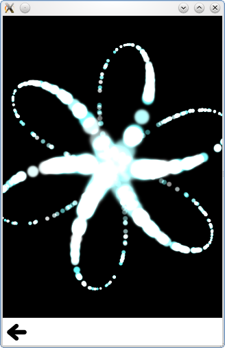

QtQuick.Particles Examples - Emitters
This is a collection of examples using Emitters in the QML particle system.

This is a collection of small QML examples relating to using Emitters in the particle system. Each example is a small QML file emphasizing a particular element or feature.
Velocity from motion gives the effect of strong particle motion through primarily moving the emitters:
Burst and pulse calls the burst and pulse methods on two idential emitters.
Note how burst takes an argument of number of particles to emit, and pulse takes an argument of number of milliseconds to emit for. This gives a slightly different behaviour, which is easy to see in this example.
Custom Emitter connects to the emitParticles signal to set arbitrary values on particle data as they're emitted;
This is used to emit curving particles in six rotating spokes.
Emit mask sets an image mask on the Emitter, to emit out of an arbitrary shape.
Maximum emitted emits no more than a certain number of particles at a time. This example makes it easy to see what happens when the limit is reached.
Shape and Direction emits particles out of an unfilled Ellipse shape, using a TargetDirection
This sends the particles towards the center of the ellipse with proportional speed, keeping the ellipse outline as they move to the center.
TrailEmitter uses that element to add smoke particles to trail the fire particles in the scene.
Files:
- particles/emitters/emitters.qml
- particles/emitters/content/burstandpulse.qml
- particles/emitters/content/customemitter.qml
- particles/emitters/content/emitmask.qml
- particles/emitters/content/maximumemitted.qml
- particles/emitters/content/shapeanddirection.qml
- particles/emitters/content/trailemitter.qml
- particles/emitters/content/velocityfrommotion.qml
- particles/emitters/main.cpp
- particles/emitters/emitters.pro
- particles/emitters/emitters.qmlproject
- particles/emitters/emitters.qrc